Функционал
В данной инструкции представлены подробные описания кнопок чат-бота и функции, которые он выполняет, а также примеры работы с ним в виде скриншотов с описанием выполняемых действий.
Наш бот обладает следующими функциями: добавление персональных задач; изменение персональных задач; удаление персональных задач; вывод персонального списка задач и задач из СДО Московского Политеха по приоритету или за определенную дату; добавление пользовательских уведомлений.
Таким образом, нижеприведенная инструкция поможет Вам разобраться в использовании и работе нашего чат-бота.
Начало работы с чат-ботом
Для начала работы с чат-ботом введите команду /start. После чего отобразится приветственное сообщение, где кратко рассказано о функциях чат-бота, предоставлена обратная связь, через которую можно связаться с разработчиками, а также пользовательское соглашение, которое автоматически считается принятым при успешной авторизации пользователя в чат-боте MosPolyTracker.
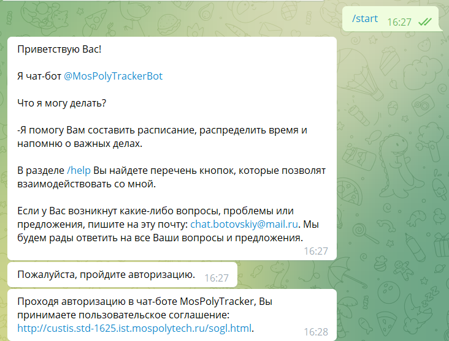Далее предлагается пройти авторизацию: нужно ввести отдельными сообщениями логин и пароль от учётной записи платформы СДО Московского Политеха (после ввода пароля он будет сразу же скрыт).
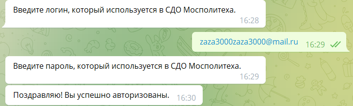В случае прохождения авторизации пользователем будет предложено пройти опрос для улучшения работы чат-бота.
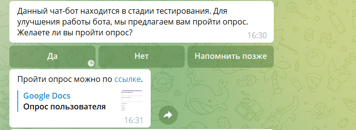Главное меню
Ниже появится главное меню, содержащее 6 кнопок: «Добавить задачу», «Изменить задачу», «Удалить задачу», «Вывести список задач», «Уведомления» и «Выйти из аккаунта», с помощью которых можно перейти в любой раздел чат-бота в рамках доступного функционала.
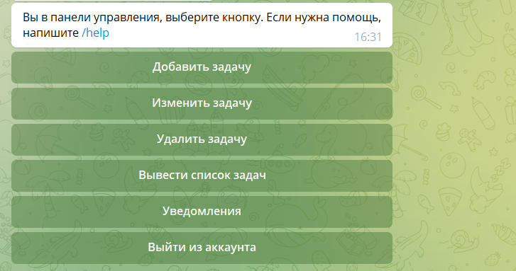Для того, чтобы получить информацию о кнопках из главного меню и инструкции по использованию чат-бота, пользователю нужно отправить команду «/help».
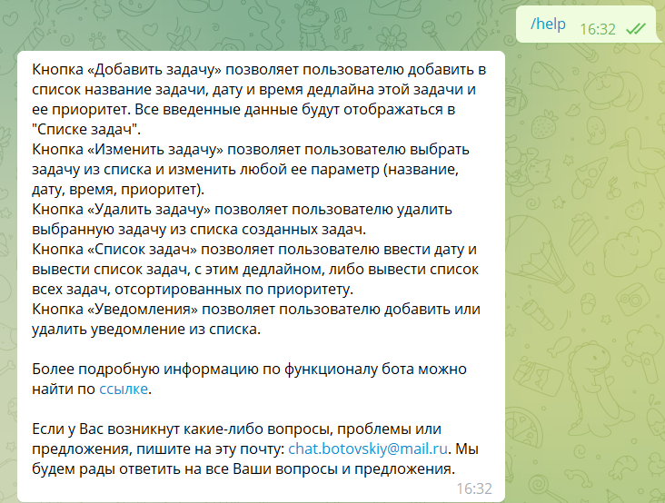Кнопка «Добавить задачу»
Кнопка «Добавить задачу» позволяет добавлять в список задач персональные задачи, которые не связаны с СДО Московского Политеха. После нажатия на данную кнопку необходимо ввести название персональной задачи, выбрать год дедлайна, месяц дедлайна, день дедлайна, время дедлайна, а затем выбрать приоритет (низкий 🟩, средний 🟨, высокий 🟥) добавляемой задачи, после чего можно либо изменить какой-нибудь из перечисленных параметров добавления задачи, либо с помощью кнопки «Добавить и выйти в меню» перейти в главное меню чат-бота.
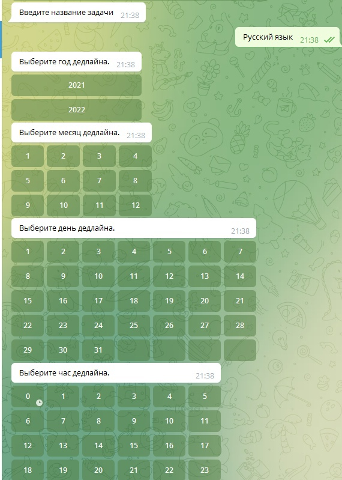 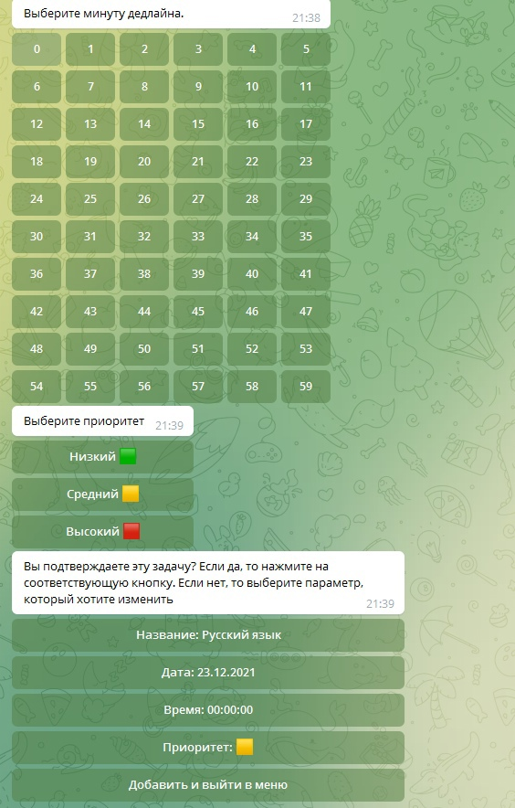Кнопка «Изменить задачу»
Кнопка «Изменить задачу» позволяет изменить созданные раннее персональные задачи. После нажатия на данную кнопку пользователю выводится список созданных задач в виде кнопок, после чего необходимо нажатием выбрать ту задачу, которую Вы хотите изменить. Далее для выбора предоставляются следующие кнопки: «Изменить название», «Изменить дату дедлайна», «Изменить время дедлайна», «Изменить приоритет», «Выйти в меню изменений», «Сохранить и выйти в главное меню». После изменения параметров персональной задачи по каким-либо приведенным параметрам для ее сохранения в чат-боте необходимо нажать на кнопку «Сохранить и выйти в главное меню».
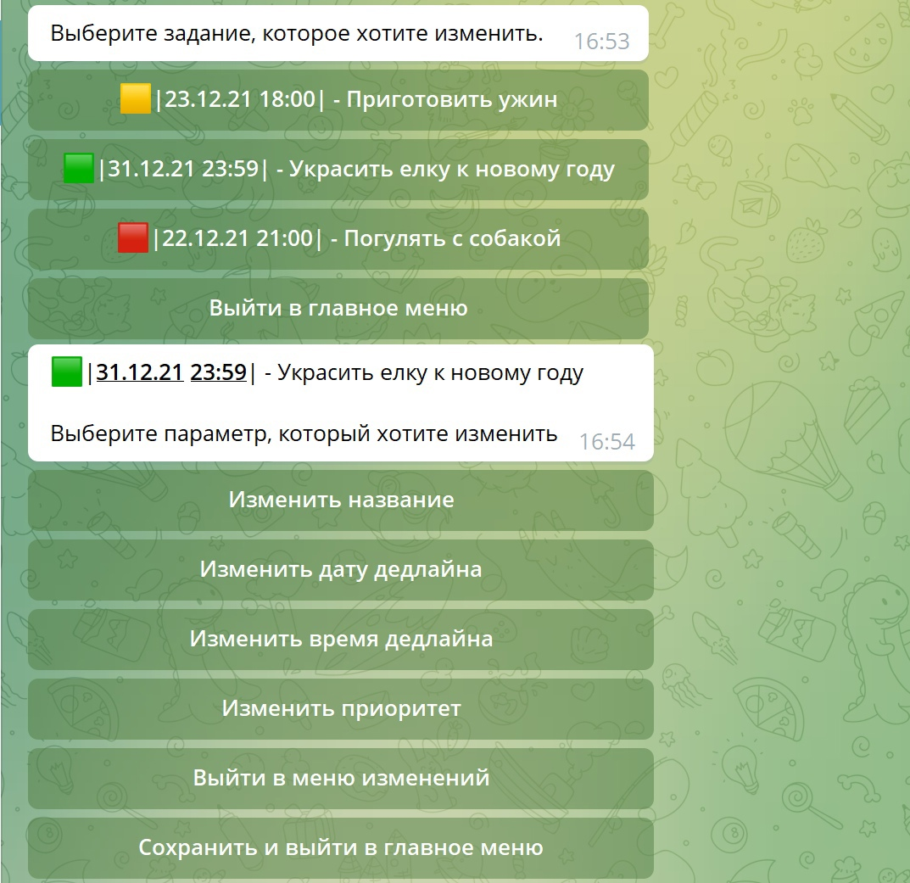
Кнопка «Удалить задачу»
Кнопка «Удалить задачу» позволяет удалить созданные раннее персональные задачи. После нажатия на данную кнопку пользователю выводится список созданных задач в виде кнопок, после чего необходимо нажатием выбрать ту задачу, которую Вы хотите удалить.
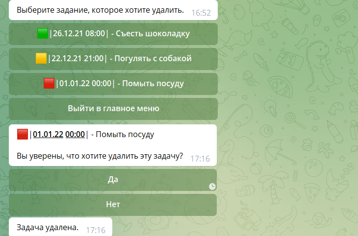Кнопка «Вывести список задач»
Кнопка «Вывести список задач» позволяет просматривать персональные задачи и задачи из СДО Московского Политеха в чат-боте за определенную дату или по приоритету («По дате» и «По приоритету» соответственно).
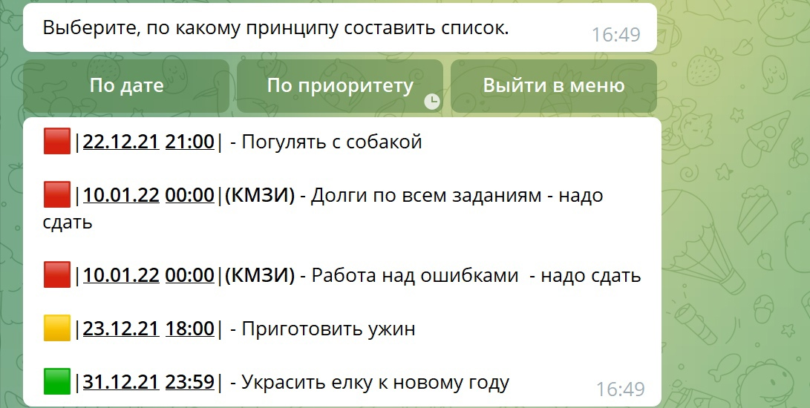Кнопка «Уведомления»
Кнопка «Уведомления» позволяет просматривать текущие настройки уведомлений, то есть за какие промежутки времени до дедлайна будут присылаться эти уведомления. После нажатия на кнопку «Уведомления» предоставляется список пользовательских уведомлений и кнопки «Удалить уведомление», «Добавить уведомление», «Главное меню».
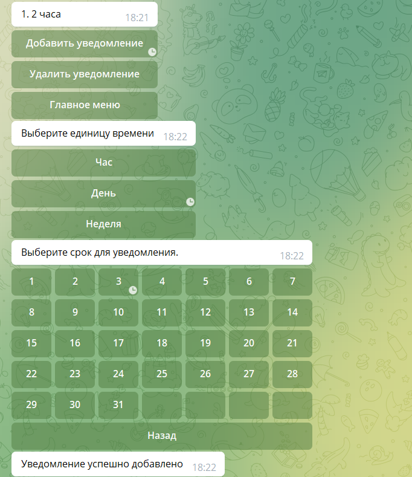Кнопка «Выйти из аккаунта»
Кнопка «Выйти из аккаунта» позволяет пользователю выйти из учетной записи СДО Московского Политеха. В случае выхода из учетной записи будут автоматически удалена все личные задачи пользователя, поэтому перед выходом ему выводится предупреждающее сообщение об удалении его задач.
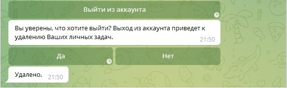